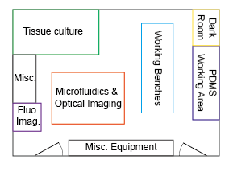
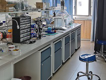
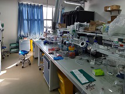
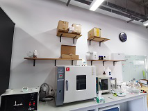

Overview
Our lab is equiped with good facilities, including benches for general use, softlithography instruments, imaging instruments, and tissue culture instruments.

Lab layout

Bench #1

Bench #2
Tissue culture room

PDMS working area
Microfabrication facilities
- PDMS soft lithography
- Vaccums for degasing
- Ovens for baking
- UV-Ozone cleaner for surface activation
- Syringe pumps
- Plasma cleaner for surface activation
- Laser cutter (access)
- Critical point dryer (Leica, access)
- Stardard photolithography (SU-8, silicon etching; outsource)
- Nanoscale materials characterization tools (access)
- Micro/Nanofab Center at SUSTech (access)
Some instruments are shown below.

UV-Ozone cleaner

Oven

Vacuum chambers
Syringe pumps
Plasma cleaner
Dark room for UV curing
Imaging Facilities
- Inverted phase contrast microscope (Nikon Ts2)
- Stereomicroscope (Motic SMZ)
- Digital microscope (Dino-Lite)
- Inverted fluorescence microscope (Nikon Eclipse Ti2-E)
- Laser confocal microscope (Leica TCS SP5, access)
- Scanning electron microscope (access)
- High-speed camera (Phantom, access)
Some instruments are shown below.
Nikon Ts2

Motic Stereomicroscope
Nikon Eclipse Ti2-E Fluorescence Microscope
Motic AE2000 Inverted
Phantom VEO High-speed Camera
Tissue Culture Facilities
- Cleanroom
- Biosafety cabinets, clean benches, etc.
- 4, -20, and -80 ℃ fridges/freezers
- Autoclaves
- Incubators
- Bio-analysis instruments (access)
Some instruments are shown below.
Tissue culture room
Tissue culture room
English | 中文